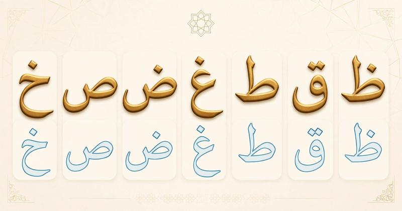

Tafkheem and Tarqeeq in Tajweed: Heavy and Light Letters Complete Guide [2026]

Tafkheem and Tarqeeq means heavy and light sounds in Tajweed. Some Arabic letters are always heavy, some always light, and three letters (ا، ل، ر) change. Mastering this is essential for correct recitation and is directly linked to Makharij Al Huruf and Sifat Al Huruf. If you made common Tajweed mistakes, Tafkheem/Tarqeeq is likely one of them. Learn first what Tajweed is.
Table of Contents
- What is Tafkheem and Tarqeeq?
- Always Heavy Letters - خص ضغط قظ
- Always Light Letters
- Sometimes Heavy: ر، ل، ا
What is Tafkheem and Tarqeeq?
Tafkheem = heaviness (tongue goes up to palate), Tarqeeq = lightness. This is a Sifat (characteristic) of letters. See full Sifat Al Huruf guide.
Always Heavy Letters - خص ضغط قظ
7 letters always heavy: خ ص ض غ ط ق ظ. Even if they have kasra, they stay heavy but less heavy. Example: "Qaala / قال" heavy Qaf. These letters also have Qalqala for ق ط ب ج د.
Levels of Tafkheem
Heavy letters have 5 levels: 1. With Fatha + Alif (أعلى), 2. With Fatha alone, 3. With Damma, 4. With Sukun, 5. With Kasra (أدنى).
Always Light Letters
All other letters are always light (Tarqeeq) - cannot be heavy. Example: ب ت ث etc. This is where Makharij helps - correct mouth position.
Sometimes Heavy Letters: ر، ل، ا
1. Ra (ر) Rules
Ra heavy if: with Fatha/Damma, or Sakin preceded by Fatha/Damma. Ra light if: with Kasra, or Sakin preceded by Kasra. Special cases in Quran.
2. Lam (ل) in Allah
Lam in "Allah / الله" heavy if before it is Fatha/Damma (Abdullah), light if Kasra (Bismillah). Only this Lam changes!
3. Alif (ا)
Alif follows previous letter - if previous heavy, Alif heavy, if light, Alif light. Example: "Qaala / قال" heavy, "Kaana / كان" light.